Downloads · No Store
Swag
The arc, the scatter, and the one dot the line misses, put on things. Stickers and wallpapers download as real files; the shirts and the rest are mockups, statistically insignificant as merch but the art is yours to keep.
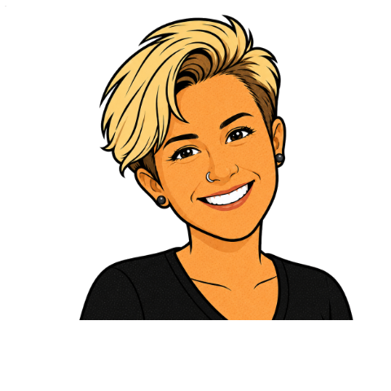
01 · Grab and Go
Downloads
Stickers, wallpapers, and the shirt art, yours to take. Every design in this section hands you a real file.
Character Stickers
Click any sticker to download the transparent PNG, or take the whole sheet at once.
{kind=link}
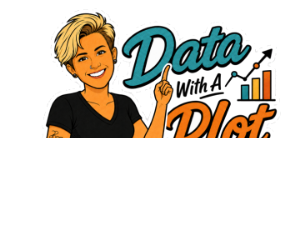
Data With a Plot You Got This{kind=link}
{kind=link}
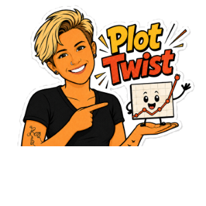
Plot Twist{kind=link}
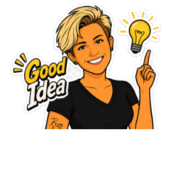
Good Idea{kind=link}
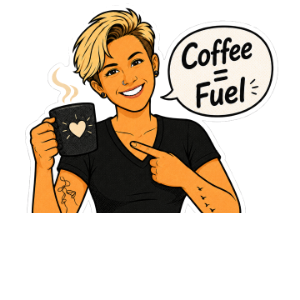
Coffee = Fuel{kind=link}
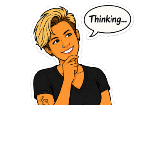
Thinking…Download the whole sticker sheet (PNG)
{kind=link}
Wallpapers
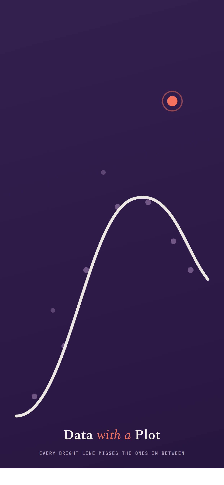
Wallpaper · DownloadPhone Wallpaper
The arc climbing an ink-plum screen, with one coral outlier near the top.
{kind=link}
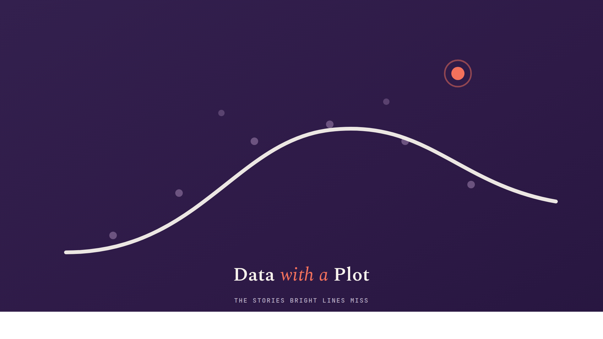
Wallpaper · DownloadDesktop Wallpaper
The same rise and fall, wide, with room for your icons in the quiet corners.
{kind=link}
Shirt Art
Six flat print designs. The tees and hoodie are mockups, but grab any design on its own, or take the whole pack.
Download all six shirt designs (PNG)
{kind=link}
The Line at 18
The maturity curve, the bright line at 18, and the one point sitting just past it.
{kind=link}
I Tell Their Stories With Data
Your tagline from the site's own social card, under the arc and the one it misses.
{kind=link}
Clarity Is Kindness
Your working premise, set plain. The one that reads from across a room.
{kind=link}
The Wordmark
The mark and the wordmark, cream on ink. The one a slogan-averse colleague will actually wear.
{kind=link}
Small Sample, Significant Effect
A few dots, one large result. One person can move the estimate.
{kind=link}
Women in STEM
The one coral dot among the rest, the outlier the default line keeps missing.
{kind=link}
02 · The Brand on Real Things
The Merch Table
The kit on real objects. These are physical mockups: the merch is imaginary, but every design is drawn in the brand.
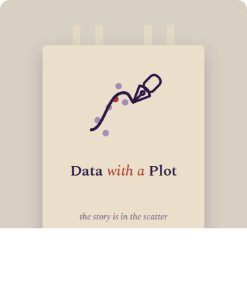
Tote · MockupField Tote
The mark and wordmark on canvas, with "the story is in the scatter" underneath.
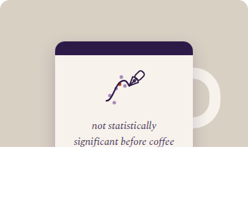
Mug · MockupThe Coffee Mug
"Not statistically significant before coffee." The honest one.
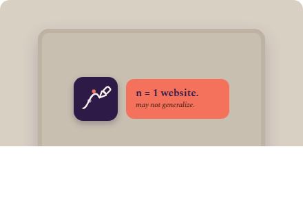
Laptop · MockupLaptop Decal
The mark and "n = 1 website. May not generalize." for your lid.
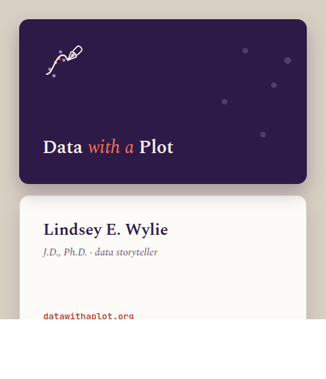
Business Card · MockupThe Business Card
The identity on a card: "bright lines vs. the people in between."
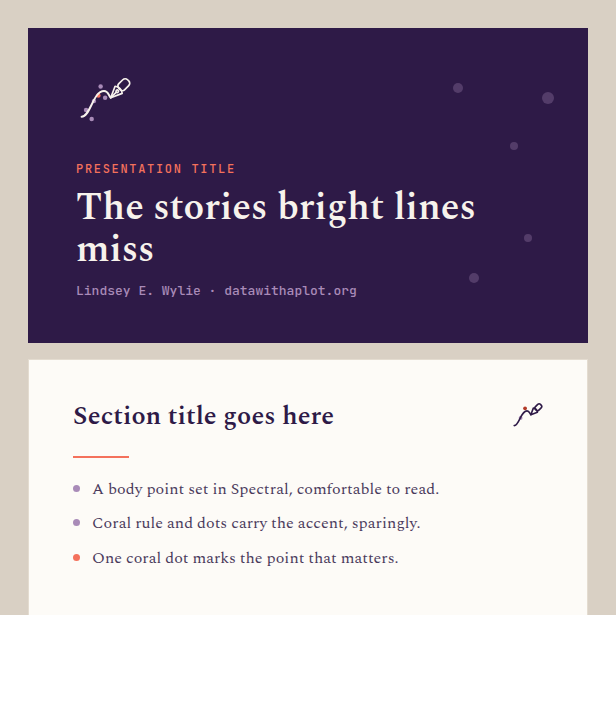
Slides · MockupSlide Template
A title and content slide in the brand: "The stories bright lines miss."